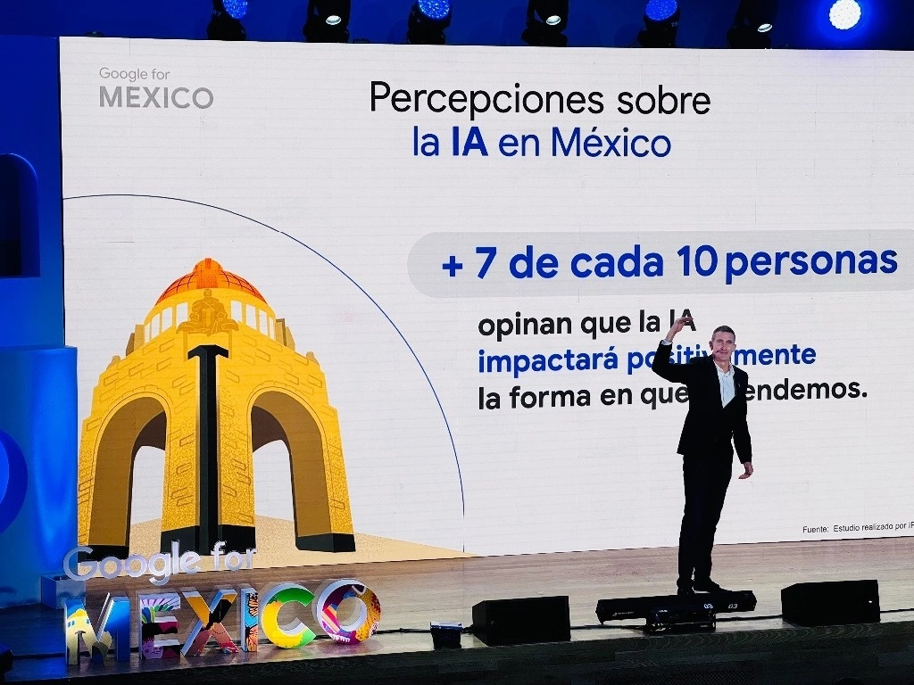

Ciudad de México. En 2023, el impacto económico generado por Google en negocios y empresas mexicanas ascendió a 278 mil millones de pesos, dio a conocer Julian Coulter, director general de Google México. Durante el evento Google for México, el directivo del gigante tecnológico destacó que los ingresos para los desarrolladores de aplicaciones a través de la Play Store, la tienda virtual de la firma, sumaron 11 mil 900 millones de pesos el año pasado. Se trata de los beneficios económicos generados para las pequeñas, medianas y grandes empresas que operan en el país y que utilizan servicios de Google dentro de sus procesos como Google Search, Ads, AdSense, Play, YouTube y Google Cloud. Según Coulter, por medio del ecosistema de Android, al cierre del año pasado se crearon 170 mil 800 empleos y fuera del ámbito laboral, las personas ahorraron más de 105 mil millones de pesos, gracias al uso de herramientas de Google Workspace como Google Drive, fotos, documentos, presentaciones y hojas de cálculo. “El avance de la digitalización es veloz y estamos preparados para apoyar a las pequeñas y medianas empresas de México”, dijo el directivo. Señaló que en nuestro país, 7 de cada 10 personas consideran que la inteligencia artificial impactará positivamente la forma en la que se aprende y por ello Google ya trabaja en la implementación y puesta en marcha de esta tecnología dentro de todos sus servicios. De acuerdo con la empresa, para el cierre de este año 90 por ciento de las tarjetas emitidas por bancos o instituciones financieras serán compatibles con su billetera digital, lo cual permitirá a más pequeños y medianos negocios a digitalizarse. 